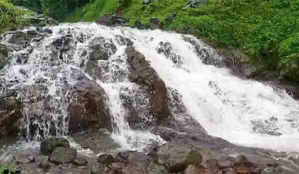
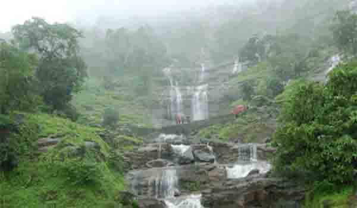

जुम्मापट्टी हे महाराष्ट्रातील एक छोटेसे स्टेशन आहे. निसर्गप्रेमींमध्ये प्रसिद्ध असलेल्या सर्वात निसर्गरम्य धबधब्यांपैकी एक जुम्मापट्टी धबधबा. स्टेशन नेरळ - माथेरान टॉय ट्रेन मार्गावर आहे आणि आपण जिथे जिथे पहाल तिथे जाड झाडाची पाने आहेत.
धबधब्यात भिजून काही शांत क्षण व्यतीत करण्याशिवाय, आपण अशा सुंदर निसर्ग ठिकाणी चालण्याचा अनुभव घेऊ शकता. पाण्याच्या प्रवाहाने जंगलातील हिरव्या झाडांच्या मध्यभागी राखाडी खडकांवर केसकेडिंग बनविलेले दृश्य आपण जवळून पाहू इच्छितो.
उंची :
१२० फूट
स्थान :
जुम्मापट्टी, नेरल - माथेरान ट्रेन मार्ग
कसे जावे :
जुम्मापट्टी ट्रेन स्टेशनवर उतरून धबधब्यापर्यंत चाला.